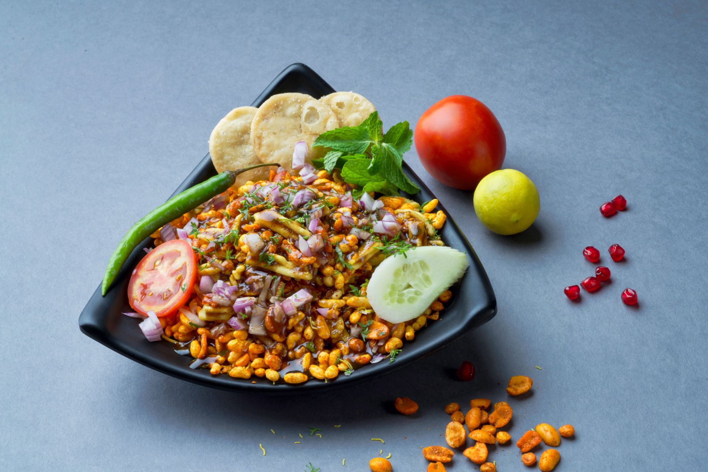

Bhel is a light and crunchy Indian street food made using puffed rice, vegetables, chutneys, and spices. It is one of the most popular snacks sold on beaches and roadside stalls across India. The combination of sweet tamarind chutney, spicy green chutney, onions, tomatoes, and crispy sev creates a delicious balance of flavors. Every bite feels refreshing and crispy. Bhel is quick to prepare and perfect for evening snacks. It is loved by children and adults because of its chatpata taste and colorful appearance.